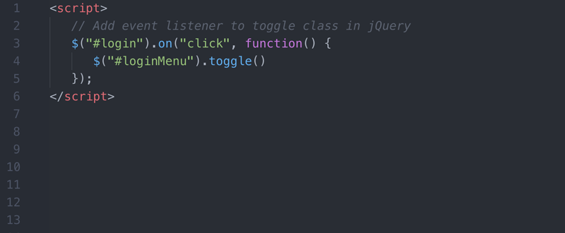

jQuery швидко стає обов'язковим навиком для фронтенд-розробників. Метою цієї книги є огляд JavaScript-бібліотеки jQuery. Після завершення читання ви повинні вміти вирішувати основні завдання за допомогою jQuery і мати міцну основу для продовження навчання. Ця книга замислювалася як матеріал, який використовується в навчальному класі, але ви можете знайти його корисним і для самостійного вивчення.
Логіка роботи бібліотеки відповідає алгоритмам функціонування JavaScript: після вибору певного об'єкту чи групи об'єктів, можна вказати чи змінити їхні властивості.
Варто зауважити, що селектор $ по суті містить вбудований цикл, який дозволяє опрацювати УСІ елементи сторінки, що відповідають умові відбору.
Синтаксис jQuery розроблений, щоб зробити орієнтування у навігації зручнішим завдяки вибору елементів DOM, створенню анімації, обробки подій, і розробки AJAX-застосунків. jQuery також надає можливості для розробників, для створення плагінів у верхній частині бібліотеки JavaScript. Використовуючи ці об'єкти, розробники можуть створювати абстракції для низькорівневої взаємодії та створювати анімацію для ефектів високого рівня. Це сприяє створенню потужних і динамічних веб-сторінок.
Основне завдання jQuery — це надавати розробнику легкий та гнучкий інструментарій кросбраузерної адресації DOM об'єктів за допомогою CSS та XPath селекторів. Також дана бібліотека надає інтерфейси для Ajax-застосунків, обробників подій і простої анімації.
Принцип роботи jQuery полягає в використанні класу (функції), який при звертанні до нього повертає сам себе. Таким чином, це дозволяє будувати послідовний ланцюг методів.